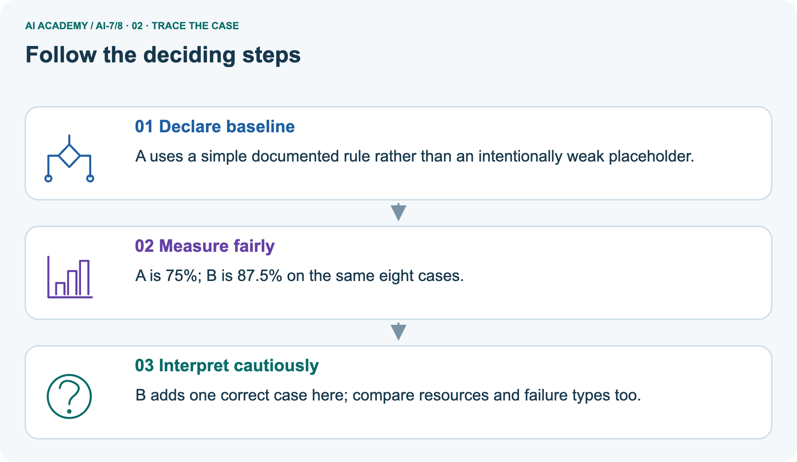
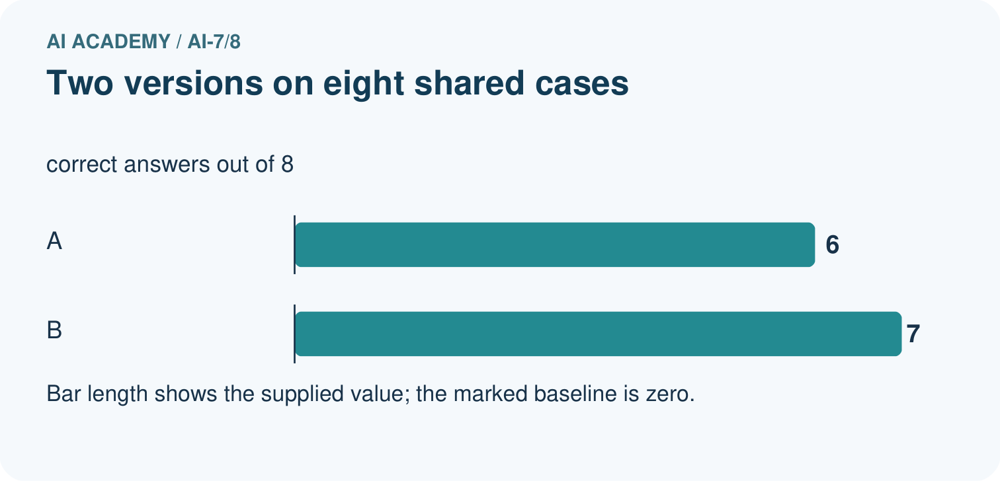
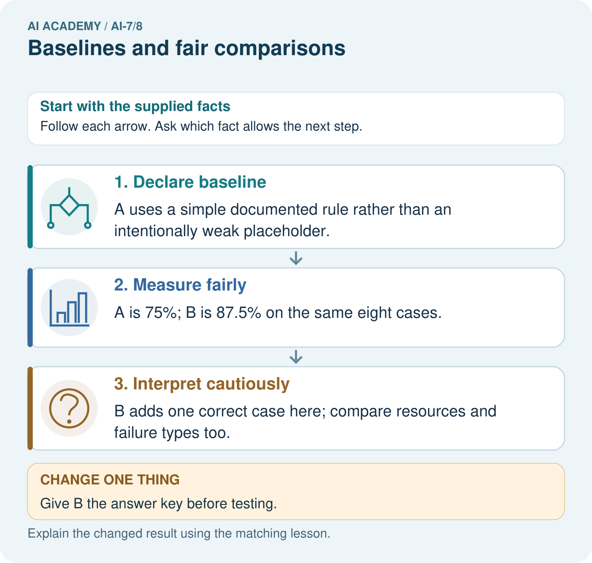
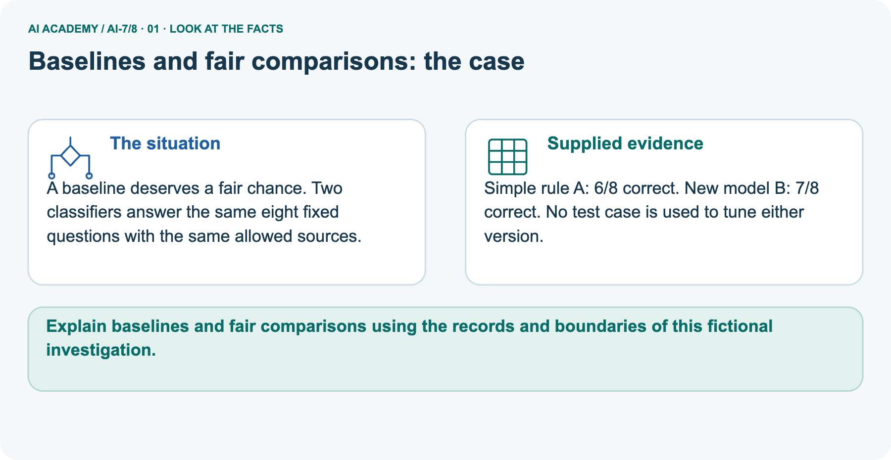
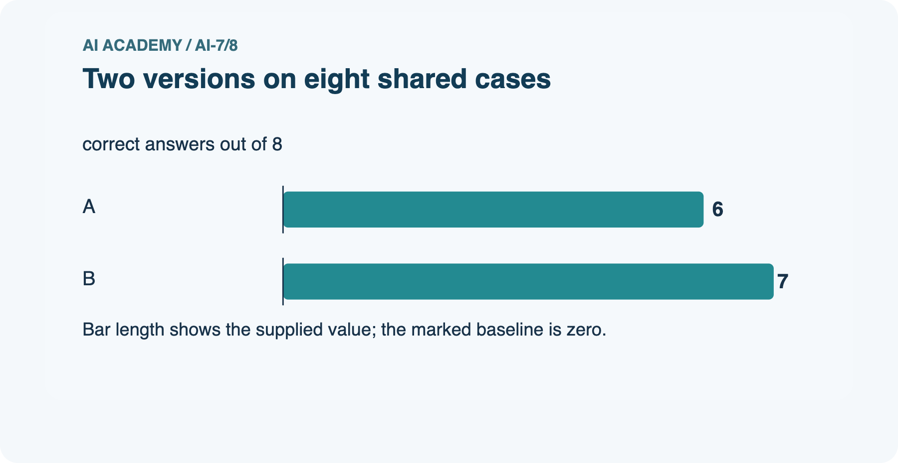
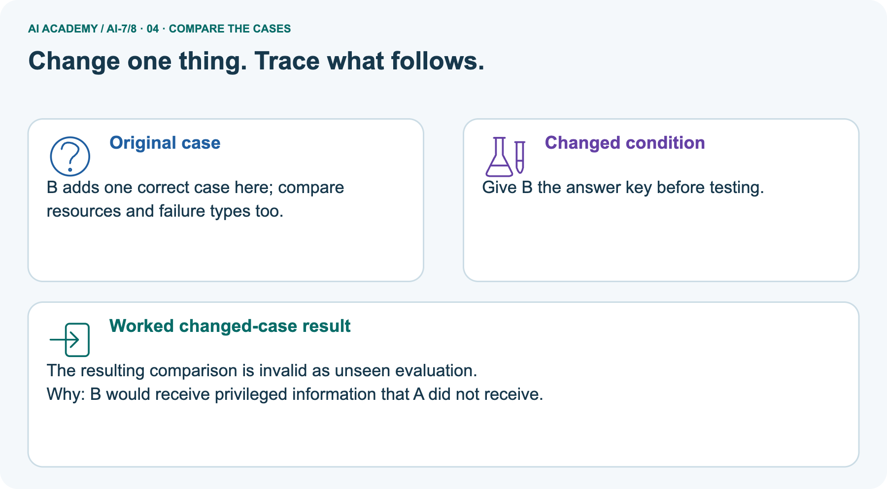
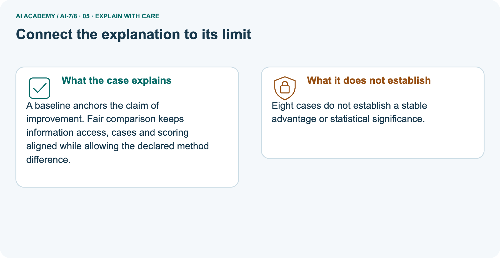
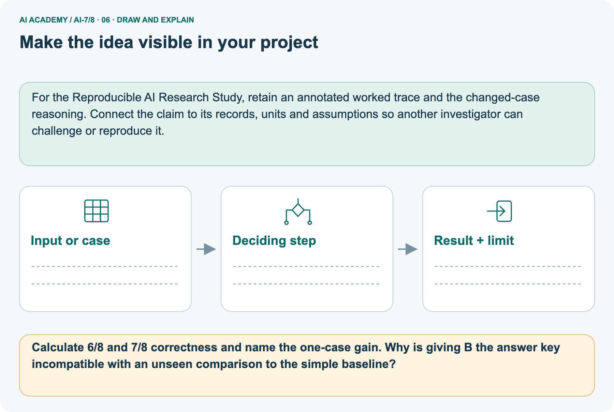

AI Academy · Level 7 · Grade 12 · Week 8 · Teacher guide
Baselines and fair comparisons
Learn to understand, design, build, test and explain AI systems responsibly.
Project: Reproducible AI Research Study
THE CONNECTED WEEK
Ask whether the comparison changes method, information, labels or resources.
Teach fair baselines without treating missing conditions or toy scores as real benchmark assurance.
Keep one habit: Model source confound → align permitted evidence → protect hidden evaluation labels → assess task budget → retain unreported resources and inference limits.
Main lesson · Section 1
Prepare the connected research investigation
Keep modelling, shared practice and independent evidence distinct.
Target and main teaching plan
Primary target: Explain the mechanism and terminology of baselines and fair comparisons
| Session | Sequence and minutes | Resources |
|---|---|---|
| Session 1 · Understand · 45 min | 0–7: recall and prerequisite; 7–15: inspect the concrete case and predict; 15–30: teacher models the worked trace; 30–40: learners explain a step using the text and visual; 40–45: check the core idea. | Use Your mission, Notice the evidence, See how it works, Words that unlock the idea and Follow a worked example; record the brief recall in the workbook. |
| Session 2 · Practise · 45 min | 0–5: retrieve the procedure; 5–15: W2 completion practice; 15–23: explain and check with a partner; 23–30: each learner answers the misconception check; 30–40: targeted reteaching or a harder variation; 40–45: prepare the investigation. | Use Find and repair a mistake, Practise together and Run the investigation, with workbook W2 and Individual reasoning check. |
| Session 3 · Investigate and transfer · 45 min | 0–5: retrieve the decision rule; 5–20: investigate or trace; 20–30: start the independent case; 30–38: connect the project; 38–43: act on feedback; 43–45: plan the return check. | Use Run the investigation, Build your understanding, Connect your project and Show what you know. Reserve further time for the full task set. Use a code example only where one is actually supplied. |
This is a starting allocation of 135 minutes, not a validated duration. Preserve all named topics. Schedule extra time for connected examples, the full investigation, independent cases and project building.
Repeated copies of a case share one recorded attempt; they are not new evidence.
Preparation and prerequisite
Lesson and workbook; paper and pencil
Calculator and optional local Python 3 for arithmetic; no live API or private data
Prepare the fresh retry separately and withhold its solution until after collection
A result depends on the inputs, procedure and conditions that produced it. Preserve data roles and distinguish observed outcomes from predictions or unmeasured conditions.
If the prior concept cannot be explained, use a short retrieval activity before this chapter.
Opening retrieval
Without opening the old lesson, explain one key idea from Hypotheses and measurable outcomes. Give an example and a mistake that the idea helps you avoid.
Look for: Explain the mechanism and terminology of hypotheses and measurable outcomes
Reference example, not the only acceptable wording: Teacher explanation: A hypothesis predicts a measurable comparison under stated conditions. Declare primary outcome and direction before inspecting results.
Toy hypothesis:method B improves supported-answer rate over baseline A on a reserved paired set. Define support rubric and failure treatment; record secondary outcomes separately.
Without opening the old lesson, explain one key idea from Replication and reproduction. Give an example and a mistake that the idea helps you avoid.
Look for: Explain the mechanism and terminology of replication and reproduction
Reference example, not the only acceptable wording: Teacher explanation: Reproducing a computation uses recorded artifacts; replication collects new evidence under a comparable question.
Naming conventions vary, so define the terms in the project. Here replay means same artifacts/procedure; new-data replication means newly collected eligible cases under the same plan.
Preserve environment, data versions and raw results.
Without opening the old lesson, explain one key idea from Reading a research claim. Give an example and a mistake that the idea helps you avoid.
Look for: Explain the mechanism and terminology of reading a research claim
Reference example, not the only acceptable wording: Teacher explanation: Reading a claim requires its method, data, comparison and uncertainty. Titles and abstracts may omit conditions crucial to interpretation.
Separate the claim from supplied evidence. Record dataset, unit, baseline, metric and limitations. Ask whether the statement extends beyond those observations.
Pictured end goal
Explain baselines and fair comparisons using the records and boundaries of this fictional investigation.
Earlier wording, alternatives and picture transcripts
Teach the learning cycle
Retrieval answer guidance
Hypotheses and measurable outcomes
Replication and reproduction
Reading a research claim
Compact alternative: two 45-minute sessions for the core explanation and W1–W5 only. The main plan uses three sessions; schedule further time for the complete investigation, project, visual journey and any code examples. Fair baselines use credible procedures on matched evidence and resource conditions. A weak arbitrary reference can exaggerate improvement.
Use the supplied constructed scenarios to make the mechanism inspectable. Collect W4 before sharing solutions.
Students should name intermediate evidence and limitations; classroom pacing and learning effectiveness remain unvalidated.
Outcomes
Explain the mechanism and terminology of baselines and fair comparisons
Apply the stated procedure to a new case with a traceable result
Identify an assumption or limitation and design a revealing follow-up
Preparation
Prerequisite answer
End goal for the pictorial case
This added worked case illustrates the week’s main idea. Retain all original and connected topics; schedule its practice within the teaching cycle.
Main lesson · Section 2
Teach a credible baseline with matched evidence and explicit constraints
Separate a source confound, test leakage and unmeasured resource trade-offs.
Definitions and complete fictional comparison contract
Fair baselines use credible procedures on matched evidence and resource conditions. A weak arbitrary reference can exaggerate improvement.
For a room-reporting study use manual authoritative lookup or a deterministic lookup matching the requested room, not random room names. Match cases, available sources and scoring.
| Fair-comparison item | Complete fictional classroom rule |
|---|---|
| Credible baseline | Manual authoritative lookup or deterministic lookup matching the requested room; not arbitrary random rooms |
| Matched evidence | Same eligible current sources for a method-focused comparison |
| Matched workload/scoring | Same fixed case IDs, outcome rubric and evaluation labels kept out of tuning inputs |
| Resource policy | Declare timing boundary, budgets and what each procedure actually consumes; unknown is not automatically matched |
| Added main fixture | Same lookup function on clubs V/W/X; only source freshness differs |
| Current register/truth | V→E, W→B, X→D |
| Old register | V→C, W→B, X→A |
| Separate picture | Same eight fixed questions and allowed sources; A 6/8 correct, B 7/8; no test-case tuning |
| Limits | Constructed counterexample/aggregates, not a model benchmark, measured runtime, stable advantage or significance result |
Main counterexample ledger and checked reasoning
| Added same-procedure fixture | Current correct room | Old-source lookup | Current-source lookup |
|---|---|---|---|
| Club V | E | C: incorrect | E: correct |
| Club W | B | B: correct | B: correct |
| Club X | D | A: incorrect | D: correct |
| Score on three constructed cases | Same judge and function | 1/3 | 3/3 |
| Align both to current register | Same cases/function/current evidence | 3/3 | 3/3 |
| Meaning | Only information changed in this demonstration | Score gap can occur without a method difference | Not a prediction that real A/B models must tie |
Main unequal register freshness prevents isolating method improvement. Added identical lookup fixture scores 1/3 old versus 3/3 current and ties 3/3 when sources aligned; not a claim that real models tie. Picture A 6/8=75%, B 7/8=87.5%, net one correct/+12.5 points; raw paired flips and resource data absent.
Hidden judge-key exposure invalidates unseen testing, while permitted current task register is legitimate evidence. Small aggregates alone do not supply a significance result; do not teach that small N makes all significance impossible.
Selected model 12 seconds versus baseline 2 with per-case budget 3: model exceeds budget even if quality rises; compare complete procedures under declared budgets or matched time limits, not invented early answers.
Baselines and fair comparisons — evidence trace
Guided: Source freshness is confounded with procedure. Provide both the same eligible current sources or report the unequal comparison without isolating method.
Qualification: A baseline is credible relative to the task, not merely a procedure easy to outperform.
Exit: accept a concrete variation with its predicted outcome and a stated condition that would challenge the mechanism; reject a claim resting on unmeasured evidence.
Assistant gets current register; baseline gets an obsolete one. Assistant scores higher.
Source freshness is confounded with procedure. Provide both the same eligible current sources or report the unequal comparison without isolating method.
Compare the intermediate evidence with the final statement. Explain why each number or decision follows from the stated inputs.
The conclusion belongs to this scenario and procedure; changing the inputs, evaluation population or authority can change what it establishes. Retain the raw record so a later revision can be compared honestly.
Credibility, leakage and budget probes
| Fair-baseline probe | Expected interpretation |
|---|---|
| Baseline intentionally random despite available credible lookup | Weak reference can exaggerate apparent improvement |
| B current sources, A obsolete sources | Information freshness confounded with method |
| Both use current permitted register | Appropriate matched task evidence; not automatically all other controls |
| Only B sees hidden judge labels | Evaluation leakage; not an unseen fair test |
| Same headline score but resources unknown | Cannot infer equivalent cost or budget performance |
| Higher quality violates task time budget | Report complete procedure trade-off; no budget-feasible superiority claim |
| Small aggregate score gap | Descriptive result; stable advantage/significance need appropriate evidence |
| Unknown paired case outcomes | Net correct-count change does not identify every gain/loss |
| Conditions audit has no recorded mismatch | Checks declared metadata only, not actual execution verification |
Separate eight-case gain and missing-condition scope
A baseline deserves a fair chance. Two classifiers answer the same eight fixed questions with the same allowed sources.
Simple rule A: 6/8 correct. New model B: 7/8 correct. No test case is used to tune either version.
The picture is a separate eight-case baseline/model comparison. A 6/8 =75%; B 7/8 =87.5%; difference 12.5 percentage points and one net additional correct answer. Aggregates do not reveal every paired gain/loss. Cases, allowed sources and scoring are matched in the scenario, with no test-case tuning; resources remain unreported. Giving B the hidden evaluation answer key would break the unseen comparison.
An approved source register that the task permits reading is not the same as exposing held-out judge labels. The supplied aggregate comparison has no statistical analysis or broad-advantage evidence, and should not be reported as one.
| Separate eight-case picture | A baseline | B new model | Interpretation |
|---|---|---|---|
| Correct/total | 6/8 | 7/8 | Same fixed case denominator |
| Observed rate | 75% | 87.5% | B higher on supplied cases |
| Difference | Reference | +12.5 percentage points | One net additional correct count; paired flips not supplied |
| Permitted sources/cases | Same declared sources/cases | Same declared sources/cases | Relevant matching conditions |
| Tuning on test answers | None in original scenario | None in original scenario | Changed answer-key exposure breaks unseen evaluation |
| Resource/timing evidence | Not supplied | Not supplied | Cannot infer budget eligibility or efficiency |
Picture trace and exposed-key key



Read the picture one step at a time
A baseline anchors the claim of improvement. Fair comparison keeps information access, cases and scoring aligned while allowing the declared method difference.
These eight-case aggregate results alone establish neither a stable advantage nor a reported statistical-significance result.
Change: Give B the answer key before testing.
Prediction: The resulting comparison is invalid as unseen evaluation.
Reason: B would receive privileged information that A did not receive.
Earlier wording, alternatives and picture transcripts
Begin by writing the question the procedure is intended to answer. Identify the information already supplied, the information it will produce and the information still missing.
These are constructed classroom examples; they do not require live accounts, private records or an external service. Do not treat a plausible explanation as a measured outcome.
Before applying the procedure, write its units, denominator or decision boundary where relevant. A partner should be able to repeat each step using the same inputs.
If a required input is absent or violates the stated contract, record that condition explicitly instead of quietly replacing it with a convenient value.
| Term | Meaning |
|---|---|
| Baseline | A relevant reference procedure |
| Matched comparison | A comparison with aligned task conditions |
| Resource budget | The permitted time or computation |
Model the reasoning aloud
Use the complete worked example below before asking learners to complete W2. Reveal a small part, invite a prediction, then explain the deciding step.
These teacher notes contain solutions; do not reveal the independent case answer during modelling.
| Thinking move | Teacher prompt |
|---|---|
| Plan | What is given? What is the question? Which procedure fits these facts? |
| Do | Point to each input and intermediate step in the worked trace. Name the rule that allows the next step. |
| Check | Does the output answer the question? Which assumption or limitation prevents a larger claim? |
Use the diagram and verbal explanation together. Ask learners to match a sentence to a specific visual step; do not assign learners fixed visual or auditory learning styles.
A pictorial worked case: Baselines and fair comparisons
The facts we will use






Why this result follows
What this example does not establish
Change one thing in the pictured case
Ask while showing the picture
Cover the result. Ask learners to name the inputs and predict the next step. Uncover one step, connect the icon to the actual procedure, and explain its evidence. Then change the supplied condition and compare.
The picture is a representation; it does not document execution of a real AI model.
Main lesson · Section 3
Model a step,then remove help
Collect each learner’s reasoning before showing a key.
Current completion task and checked reasoning
Completion task: Assistant gets current register; baseline gets an obsolete one. Assistant scores higher. Show the intermediate steps and give the conclusion with its scope.
Teacher check: Teacher explanation: Source freshness is confounded with procedure. Provide both the same eligible current sources or report the unequal comparison without isolating method.
Start by identifying the given inputs together. Leave the intermediate steps blank. If needed, model one step, then withdraw that help on the next step. Move to a full trace only when the partial trace is understood.
For partners, alternate explainer and checker; collect a response from every learner before discussion.
Individual misconception check
Use the worked case for Baselines and fair comparisons. Proposed explanation: “The worked result establishes every future case”. Decide whether this explanation is supported.
Point to the step or supplied fact that decides; explain your repair if needed.
Expected correction: A baseline is credible relative to the task, not merely a procedure easy to outperform.
Collect explanations, not only yes/no votes. If a misunderstanding is common, re-model the relevant step for the class.
If it affects a few learners, give a short targeted group explanation while others solve a more demanding variation.
Pictured reasoning and changed case
Calculate 6/8 and 7/8 correctness and name the one-case gain. Why is giving B the answer key incompatible with an unseen comparison to the simple baseline?
A uses a simple documented rule rather than an intentionally weak placeholder. A is 75%; B is 87.5% on the same eight cases. B adds one correct case here; compare resources and failure types too.
Changed case: The resulting comparison is invalid as unseen evaluation. B would receive privileged information that A did not receive.
Changed-case reasoning: The resulting comparison is invalid as unseen evaluation. B would receive privileged information that A did not receive.
Collect each learner’s explanation before discussion. Use the first missing connection between input, deciding step and result to choose support. This question is worked-case practice, not fresh mastery evidence.
Accessible support and extension
Use the worked example in Sections 3 and 6. Collect a prediction before revealing its result; ask the learner to point to each intermediate fact.
Provide an input/procedure/result/limit frame and a calculator when needed. Ask students to identify the first step before completing the whole trace.
Extension: compare two concrete variants of this mechanism while holding unrelated conditions fixed; report both successful and unsuccessful outcomes.
Earlier wording, alternatives and picture transcripts
| Time or stage | Teacher action |
|---|---|
| Session 1: 0–7 minutes | Retrieve the prerequisite; identify the input, procedure and evidence source. |
| 7–18 minutes | Explain See how it works and Words that unlock the idea. Complete W1 with a mechanism-based explanation. |
| 18–32 minutes | Trace the declared procedure and worked case. Complete W2, recording intermediate steps. |
| 32–45 minutes | Discuss the diagram with the worked input; use W3 to distinguish measured claims and limitations. |
| Session 2: 0–8 minutes | Retrieve the worked reasoning and collect the guided response before discussing it. |
| 8–20 minutes | Compare a proposed boundary variant with the original case; identify what remains fixed. |
| 20–35 minutes | Collect W4 independently. Require the procedure trace and the bounded conclusion. |
| 35–45 minutes | Use W5 and exit responses for feedback. Administer the fresh retry after feedback and preserve both attempts. |
Reduce help deliberately
Individual reasoning check
Pictorial practice question
Reasoned teacher answer
Main lesson · Section 4
Run the complete supplied investigation
Separate predictions,actual runs and paper traces.
Complete inputs,expected results and limits
Main current/obsolete-source comparison confounds freshness with procedure. Added same-function fixture illustrates that confound without measuring a model. Picture75/87.5% netgain is descriptive, with unseen labels protected and resource evidence absent. Selected model 12 seconds per case exceeds the 3-second task budget, while baseline 2 seconds fits; quality gain alone cannot imply budget-feasible improvement.
Compare complete procedures under declared budgets or matched time limits and keep all outcomes/resource measurements visible.
Diagnose the current misconceptions
The worked result establishes every future case: A baseline is credible relative to the task, not merely a procedure easy to outperform.
A missing input may be replaced without recording the change: A replacement changes the evidence or contract. Record the change and its justification; do not silently turn unknown into a measured value.
Repeating an assessed case is new independent evidence: A replay checks consistency. An example used for feedback or revision cannot later be described as untouched final evaluation.
Use Section 9 for the evidence ledger. Add a boundary or missing-input case and record the expected response before checking. More successful repeats of one case do not establish wider coverage.
Choose accessible support
| What the response shows | Next teaching action |
|---|---|
| Missing or misread facts | Read the case aloud, mark supplied versus unknown facts, and let the learner restate it. |
| Wrong procedure | Return to the deciding step in the worked case. Contrast it with the proposed incorrect explanation. |
| Arithmetic or implementation error | Trace intermediate values or lines; preserve the first mismatch and retry that step. |
| Correct result without a reason | Ask for a trace and a changed case before marking independent understanding. |
| An unsupported wider claim | Ask which supplied evidence supports the claim and which further observation would be needed. |
Offer an oral explanation, drawing, enlarged visual or fewer examples when that removes a reading/writing barrier. Keep the same reasoning goal.
Stretch secure learners by changing a boundary or assumption and asking them to defend the effect, not simply by assigning more of the same questions.
Earlier wording, alternatives and picture transcripts
Match the support to the first error
Main lesson · Section 5
Assess the new research scenario
Keep the selected answer private until after a first attempt.
Selected independent task and checked answer
Selected case: Model uses 12 seconds and baseline 2 on each case. Task has a 3-second budget. How should results be framed?
Teacher explanation: The model exceeds the task budget even if quality rises. Compare complete procedures under declared budgets or use matched time limits.
Judge explanation,trace and limits
| Dimension | Evidence required |
|---|---|
| Explanation | Names the applicable idea or procedure and ties it to the supplied facts. |
| Trace and result | Preserves the given inputs and shows the relevant intermediate steps; distinguishes a prediction from an observed execution. |
| Limits | States the assumptions, missing evidence or conditions under which the result would change. |
Record each dimension as not yet, with support, or independent. Accept a valid alternative procedure with a defensible trace.
Do not penalise an honestly recorded model failure if the learner correctly explains its evidence and limits.
Give one usable repair
Name the earliest unsupported step and give one action to repair it. Have the learner make that repair now and explain why. Then assess the relevant skill on a fresh, fully specified case.
Confirm it was not previously practised with feedback; solve and check the new case before assigning it. A follow-up design prompt is a starting brief, not automatically an equivalent test.
W1 Explain the mechanism
Explain the weekly mechanism in your own words. Use the worked scenario to name its input, decision rule and output.
Teacher explanation: Fair baselines use credible procedures on matched evidence and resource conditions. A weak arbitrary reference can exaggerate improvement. For a room-reporting study use manual authoritative lookup or a deterministic lookup matching the requested room, not random room names. Match cases, available sources and scoring.
W2 Trace the worked case
Assistant gets current register; baseline gets an obsolete one. Assistant scores higher. Show the intermediate steps and give the conclusion with its scope.
Teacher explanation: Source freshness is confounded with procedure. Provide both the same eligible current sources or report the unequal comparison without isolating method.
W3 Audit the limit
A report omits this qualification: A baseline is credible relative to the task, not merely a procedure easy to outperform. Explain how omitting it could change a reader's interpretation, and write an accurate replacement.
Teacher explanation: A baseline is credible relative to the task, not merely a procedure easy to outperform.
State the observed result separately from the unverified or out-of-scope claim; preserve the original evidence rather than inventing a missing fact.
W5 Design a revealing follow-up
For the worked scenario, propose one additional case that could reveal a failure, describe its expected outcome before running it, and explain what would need to remain fixed for a fair comparison.
Do not reuse W4 as a new final test after receiving feedback.
Teacher explanation: Accept a concrete variant of the worked input or a missing/conflicting/boundary condition, with an expectation derived from the declared procedure.
Require preserved settings, original outputs and data roles. A baseline is credible relative to the task, not merely a procedure easy to outperform.
The new case should test this particular mechanism rather than merely restate the original result.
Earlier wording, alternatives and picture transcripts
Guided and exit questions
Guided: Source freshness is confounded with procedure. Provide both the same eligible current sources or report the unequal comparison without isolating method.
Qualification: A baseline is credible relative to the task, not merely a procedure easy to outperform.
Exit: accept a concrete variation with its predicted outcome and a stated condition that would challenge the mechanism; reject a claim resting on unmeasured evidence.
W1 Explain the mechanism
W2 Trace the worked case
W3 Audit the limit
W4 Apply a new case independently
Model uses 12 seconds and baseline 2 on each case. Task has a 3-second budget. How should results be framed?
Teacher explanation: The model exceeds the task budget even if quality rises. Compare complete procedures under declared budgets or use matched time limits.
W5 Design a revealing follow-up
Independent assessment and fresh retry
W4: The model exceeds the task budget even if quality rises. Compare complete procedures under declared budgets or use matched time limits. Require intermediate reasoning and the stated scope.
Fresh retry: Candidate receives full source, baseline only title. Expected reasoning: Evidence availability differs. Equalise access before attributing gains to the candidate method.
If students need support, record it and reassess with another new case rather than awarding independence to a copied answer.
Assess independent transfer
Selected case answer
Feedback that the learner uses
Main lesson · Section 6
Connect, support and revisit research reasoning
Use saved evidence and assumptions to choose the next question.
Project and next-week bridge
Add a labelled baselines and fair comparisons evidence sheet to Reproducible AI Research Study. Show how you can explain the mechanism and terminology of baselines and fair comparisons.
Use the supplied fictional case and keep its inputs, intermediate steps, calculation or prediction, and limitation. Connect this record to last week’s record; a matching answer without a trace is insufficient.
Provide an input/procedure/result/limit frame and a calculator when needed. Ask students to identify the first step before completing the whole trace.
Extension: compare two concrete variants of this mechanism while holding unrelated conditions fixed; report both successful and unsuccessful outcomes.
Next connection: Experimental units and independence. Preserve the current case record and retrieve its evidence boundary before moving on.
Retain the project ledger and assess a changed case after support. Check the relevant prerequisite before carrying this component forward.
For the Reproducible AI Research Study, retain an annotated worked trace and the changed-case reasoning. Connect the claim to its records, units and assumptions so another investigator can challenge or reproduce it.
Delayed return and support record
Suggested return points in this level: ai-7/9, ai-7/11, ai-7/14. Use actual classroom dates, adjusting for holidays and gaps. One, three and six teaching weeks are scheduling choices, not a claimed optimal spacing.
At a delayed check, ask for the idea from memory and a changed application. Compare with the earlier independent response and record support used.
For a new level, revisit the previous capstone before checking the new prerequisites.
| Record | Teacher evidence |
|---|---|
| Learner code and date | |
| Concept and case used; prior exposure | |
| Explanation / trace / limits | |
| Support and first repair | |
| Changed case and delayed outcome | |
| Next teaching action |
Use the evidence to choose reteaching or the next step. A completed page, confidence rating or attractive project does not by itself demonstrate understanding.
Earlier wording, alternatives and picture transcripts
Plan the delayed return
Project evidence from this case
Reference bank and extra practice
Choose the reference that helps your next step.
Reference · Alternative planning checklist
Reference · Section 7
Reference · Alternative planning checklist
Use alongside the main route when helpful.
Planning,assessment and project reminders
Teaching target: Explain the mechanism and terminology of baselines and fair comparisons
Prepare the labelled worked-case picture, the matching workbook, fictional input cards and a place for individual responses. Check a local Python 3 environment before class; have a paper-trace version ready.
| Session | Plan | Resources |
|---|---|---|
| Session 1 · Understand · 45 min | 0–7: recall and prerequisite; 7–15: inspect the concrete case and predict; 15–30: teacher models the worked trace; 30–40: learners explain a step using the text and visual; 40–45: check the core idea. | Use Your mission, Notice the evidence, See how it works, Words that unlock the idea and Follow a worked example; record the brief recall in the workbook. |
| Session 2 · Practise · 45 min | 0–5: retrieve the procedure; 5–15: W2 completion practice; 15–23: explain and check with a partner; 23–30: each learner answers the misconception check; 30–40: targeted reteaching or a harder variation; 40–45: prepare the investigation. | Use Find and repair a mistake, Practise together and Run the investigation, with workbook W2 and Individual reasoning check. |
| Session 3 · Investigate and transfer · 45 min | 0–5: retrieve the decision rule; 5–20: investigate or trace; 20–30: start the independent case; 30–38: connect the project; 38–43: act on feedback; 43–45: plan the return check. | Use Run the investigation, Build your understanding, Connect your project and Show what you know. Reserve further time for the full task set. Use a code example only where one is actually supplied. |
Before class, solve the supported practice: Assistant gets current register; baseline gets an obsolete one. Assistant scores higher. Show the intermediate steps and give the conclusion with its scope.
Reasoned practice answer: Teacher explanation: Source freshness is confounded with procedure. Provide both the same eligible current sources or report the unequal comparison without isolating method.
Check every learner before discussion: Use the worked case for Baselines and fair comparisons. Proposed explanation: “The worked result establishes every future case”. Decide whether this explanation is supported.
Point to the step or supplied fact that decides; explain your repair if needed.
Misconception repair: A baseline is credible relative to the task, not merely a procedure easy to outperform.
Support: read the exact case aloud, enlarge the labelled picture, supply input cards and model only the first deciding step. Accept a spoken explanation or drawing; retain the reasoning goal.
Extension: Give B the answer key before testing. Require a prediction and a reason before comparing. Expected result: The resulting comparison is invalid as unseen evaluation.
Reason: B would receive privileged information that A did not receive.
Independent assessment: withhold the reserved answer until the learner has attempted the new case. Record support separately from correctness.
| Criterion | Not yet | With support | Independent |
|---|---|---|---|
| Explanation | Names an answer without a deciding fact | Uses a hint to link fact and decision | Explains the deciding fact in own words |
| Trace or test | Cannot connect input and result | Completes steps with prompts | Traces or tests a changed case accurately |
| Limits and revision | Claims more than evidence supports | Names a limit after a prompt | States a defensible limit and useful next test |
Project checkpoint: Make a transparent first version. Keep a trace of how one input becomes an output; explain the rule or learned component.
Use the weekly teacher answer for topic-specific reasoning. A saved progress tick is an activity record; judge mastery from the learner’s explanation and evidence.
Reference · Feedback,labs and repair paths
Reference · Section 8
Reference · Feedback,labs and repair paths
Retain the first attempt and the evidence used for a repair.
Feedback and record guidance
Use the two formative questions as supported practice, not as independent mastery scores. Discuss the deciding evidence rather than accepting a guessed selection.
The feedback comes from the reviewed public worked case. Do not reveal the separately reserved independent teacher answer until the learner has attempted that case.
This week has no code block. Use this routine when a later lesson includes an executable lab.
Ask students to predict before running code. Preserve errors and actual outputs; collect a changed test and an explanation. The branch-boundary and indexing lessons deliberately include failure cases.
Use the earlier worked-explanation links to address a specific missing building block, then return to the current question. Adapt this suggestion after observing the learner; it is not an automatic diagnosis.
Collect the completed-work portfolio as evidence. Record support separately from correctness, and assess explanation, trace/test and limitations. Progress ticks and quiz selections alone do not establish mastery.
Reference · Teach with the six pictures
Reference · Section 9
Reference · Teach with the six pictures
Choose one picture for a particular reasoning move.
01. Baselines and fair comparisons: the case



A baseline deserves a fair chance. Two classifiers answer the same eight fixed questions with the same allowed sources. Supplied facts: Simple rule A: 6/8 correct. New model B: 7/8 correct.
No test case is used to tune either version.
Point to the given fact that matters most. Explain why it matters.
Teacher prompt: Point to the given fact that matters most. Explain why it matters. Ask learners to describe one label or arrow in ordinary words. Use the adjacent transcript if the image is difficult to see.
02. Follow the deciding steps
Declare baseline: A uses a simple documented rule rather than an intentionally weak placeholder. → Measure fairly: A is 75%; B is 87.5% on the same eight cases. → Interpret cautiously: B adds one correct case here; compare resources and failure types too.
Point to each numbered stage and explain which recorded input it uses.
Teacher prompt: Point to each numbered stage and explain which recorded input it uses. Ask learners to describe one label or arrow in ordinary words. Use the adjacent transcript if the image is difficult to see.
03. Two versions on eight shared cases



Two versions on eight shared cases. Units: correct answers out of 8. A: 6. B: 7.
Read the labels and values. Explain the relationship the model shows.
Teacher prompt: Read the labels and values. Explain the relationship the model shows. Ask learners to describe one label or arrow in ordinary words. Use the adjacent transcript if the image is difficult to see.
Check row/column meanings, units and denominators before discussing a difference. Supplied toy values are not real class or model results.
04. Change one thing. Trace what follows.



Original case: B adds one correct case here; compare resources and failure types too. Changed condition: Give B the answer key before testing. Expected result: The resulting comparison is invalid as unseen evaluation.
Reason: B would receive privileged information that A did not receive.
Predict before checking the worked changed-case result. Name what changed and what the supplied facts allow you to conclude.
Teacher prompt: Predict before checking the worked changed-case result. Name what changed and what the supplied facts allow you to conclude. Ask learners to describe one label or arrow in ordinary words.
Use the adjacent transcript if the image is difficult to see. Changed-case reasoning: B would receive privileged information that A did not receive.
05. Connect the explanation to its limit



A baseline anchors the claim of improvement. Fair comparison keeps information access, cases and scoring aligned while allowing the declared method difference. Limit: These eight-case aggregate results alone establish neither a stable advantage nor a reported statistical-significance result.
Explain the case, then point to a limit on the claim.
Teacher prompt: Explain the case, then point to a limit on the claim. Ask learners to describe one label or arrow in ordinary words. Use the adjacent transcript if the image is difficult to see. Keep the stated scope: These eight-case aggregate results alone establish neither a stable advantage nor a reported statistical-significance result.
06. Make the idea visible in your project



For the Reproducible AI Research Study, retain an annotated worked trace and the changed-case reasoning. Connect the claim to its records, units and assumptions so another investigator can challenge or reproduce it.
Draw your input, deciding step, result and limit. Supported question: Calculate 6/8 and 7/8 correctness and name the one-case gain. Why is giving B the answer key incompatible with an unseen comparison to the simple baseline?
Draw your project trace and justify the deciding step using evidence.
Teacher prompt: Draw your project trace and justify the deciding step using evidence. Ask learners to describe one label or arrow in ordinary words. Use the adjacent transcript if the image is difficult to see.
Supported practice key: A uses a simple documented rule rather than an intentionally weak placeholder. A is 75%; B is 87.5% on the same eight cases. B adds one correct case here; compare resources and failure types too.
Changed case: The resulting comparison is invalid as unseen evaluation. B would receive privileged information that A did not receive.
Earlier wording, alternatives and picture transcripts
Use one picture at a time. Hide a worked result before asking for a prediction, then reveal it for feedback. These are supported teaching cases; retain the separate independent assessment for a fresh first attempt.